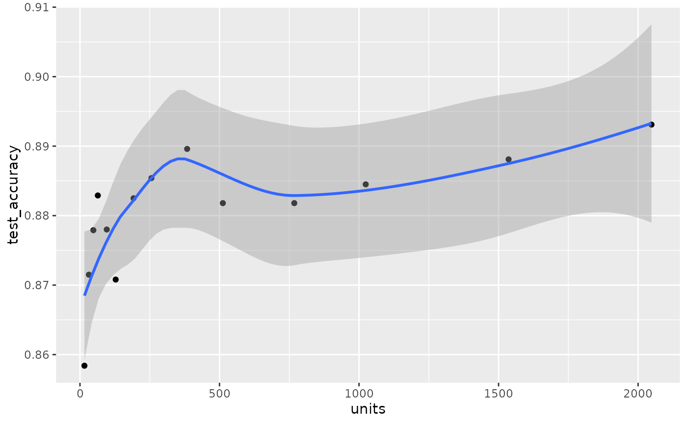

Introduction
intro.Rmdguildai provides a suite of tools for tracking, visualizing, and managing training runs and experiments. The {guildai} R package is a successor to the {tfruns} package.
Track the hyperparameters, metrics, output, and source code of every training run.
Compare hyperparmaeters and metrics across runs to find the best performing model.
Automatically generate reports to visualize individual training runs or comparisons between runs.
No changes to source code required.
Installation
The R package provides an interface to guildai core. The R package will install
guildai core on first use, or you can call install_guild()
to customize the installation. You can install the
guildai package from CRAN as follows:
install.packages("guildai")
guildai::install_guild(){guildai} can be used with any machine learning framework, or even no framework at all. For this introductory example, we’ll start with a Keras model applied to the fashion mnist dataset.
If you’ve not used Keras from R before and you want to follow along on your machine, you can install it like this:
install.packages("keras")
library(keras)
install_keras()Hello World
To start, we’ll setup a sample project folder with one script.
file.copy(system.file("examples/fashion-mnist.R", package = "guildai"),
".", overwrite = TRUE)
#> [1] TRUEHere is what the training script looks like:
library(keras)
# Prepare data ----
fashion_mnist <- dataset_fashion_mnist()
c(train_images, train_labels) %<-% fashion_mnist$train
c(test_images, test_labels) %<-% fashion_mnist$test
train_images <- train_images / 255
test_images <- test_images / 255
# Define model ----
units <- 64
model <- keras_model_sequential(input_shape = c(28, 28))
model %>%
layer_flatten() %>%
layer_dense(units = units, activation = 'relu') %>%
layer_dense(units = 10, activation = 'softmax')
learning_rate <- 0.001
model %>% compile(
optimizer = optimizer_adam(learning_rate),
loss = 'sparse_categorical_crossentropy',
metrics = c('accuracy')
)
model
# Fit model ----
batch_size <- 32
epochs <- 20
.fast <- TRUE
if (.fast) {
n <- 1:20
train_images %<>% { .[n, ,] }
test_images %<>% { .[n, ,] }
test_labels %<>% { .[n] }
train_labels %<>% { .[n] }
epochs <- 2
}
history <- model %>%
fit(train_images, train_labels,
validation_split = 0.2,
batch_size = batch_size,
epochs = epochs,
verbose = 2)
plot(history)
# Evaluate model ----
score <- model %>%
evaluate(test_images, test_labels,
verbose = 0) %>%
as.list()
cat('test_loss:', score$loss, "\n")
cat('test_accuracy:', score$accuracy, "\n")
# save_model_tf(model, "model.keras")
# saveRDS(history, "history.rds")To train a model with guildai, just use the
guild_run() function in place of the source()
function to execute your R script. For example:
guild_run("fashion-mnist.R")
#> Replaced expression '.fast <- TRUE' on line 38 with '.fast <- FALSE'
#> > library(keras)
#> > # Prepare data ----
#> > fashion_mnist <- dataset_fashion_mnist()
#> 2022-10-21 15:08:01.026745: E tensorflow/stream_executor/cuda/cuda_blas.cc:2981] Unable to register cuBLAS factory: Attempting to register factory for plugin cuBLAS when one has already been registered
#> > c(train_images, train_labels) %<-% fashion_mnist$train
#> > c(test_images, test_labels) %<-% fashion_mnist$test
#> > train_images <- train_images / 255
#> > test_images <- test_images / 255
#> > # Define model ----
#> >
#> > units <- 64
#> > model <- keras_model_sequential(input_shape = c(28, 28))
#> > model %>%
#> + layer_flatten() %>%
#> + layer_dense(units = units, activation = 'relu') %>%
#> + layer_dense(units = 10, activation = 'softmax')
#> > learning_rate <- 0.001
#> > model %>% compile(
#> + optimizer = optimizer_adam(learning_rate),
#> + loss = 'sparse_categorical_crossentropy',
#> + metrics = c('accuracy')
#> + )
#> > model
#> Model: "sequential"
#> ________________________________________________________________________________
#> Layer (type) Output Shape Param #
#> ================================================================================
#> flatten (Flatten) (None, 784) 0
#> dense_1 (Dense) (None, 64) 50240
#> dense (Dense) (None, 10) 650
#> ================================================================================
#> Total params: 50,890
#> Trainable params: 50,890
#> Non-trainable params: 0
#> ________________________________________________________________________________
#> > # Fit model ----
#> >
#> > batch_size <- 32
#> > epochs <- 20
#> > .fast <- FALSE
#> > if (.fast) {
#> + n <- 1:20
#> + train_images %<>% { .[n, ,] }
#> + test_images %<>% { .[n, ,] }
#> + test_labels %<>% { .[n] }
#> + train_labels %<>% { .[n] }
#> + epochs <- 2
#> + }
#> > history <- model %>%
#> + fit(train_images, train_labels,
#> + validation_split = 0.2,
#> + batch_size = batch_size,
#> + epochs = epochs,
#> + verbose = 2)
#> Epoch 1/20
#> 1500/1500 - 4s - loss: 0.5490 - accuracy: 0.8116 - val_loss: 0.4366 - val_accuracy: 0.8428 - 4s/epoch - 2ms/step
#> Epoch 2/20
#> 1500/1500 - 2s - loss: 0.4085 - accuracy: 0.8548 - val_loss: 0.4039 - val_accuracy: 0.8539 - 2s/epoch - 2ms/step
#> Epoch 3/20
#> 1500/1500 - 2s - loss: 0.3686 - accuracy: 0.8687 - val_loss: 0.3631 - val_accuracy: 0.8705 - 2s/epoch - 2ms/step
#> Epoch 4/20
#> 1500/1500 - 2s - loss: 0.3433 - accuracy: 0.8767 - val_loss: 0.3564 - val_accuracy: 0.8731 - 2s/epoch - 2ms/step
#> Epoch 5/20
#> 1500/1500 - 3s - loss: 0.3239 - accuracy: 0.8832 - val_loss: 0.3688 - val_accuracy: 0.8658 - 3s/epoch - 2ms/step
#> Epoch 6/20
#> 1500/1500 - 2s - loss: 0.3090 - accuracy: 0.8879 - val_loss: 0.3448 - val_accuracy: 0.8792 - 2s/epoch - 2ms/step
#> Epoch 7/20
#> 1500/1500 - 2s - loss: 0.2968 - accuracy: 0.8914 - val_loss: 0.3356 - val_accuracy: 0.8832 - 2s/epoch - 2ms/step
#> Epoch 8/20
#> 1500/1500 - 2s - loss: 0.2848 - accuracy: 0.8949 - val_loss: 0.3567 - val_accuracy: 0.8733 - 2s/epoch - 2ms/step
#> Epoch 9/20
#> 1500/1500 - 2s - loss: 0.2782 - accuracy: 0.8970 - val_loss: 0.3642 - val_accuracy: 0.8718 - 2s/epoch - 2ms/step
#> Epoch 10/20
#> 1500/1500 - 2s - loss: 0.2664 - accuracy: 0.9014 - val_loss: 0.3284 - val_accuracy: 0.8871 - 2s/epoch - 2ms/step
#> Epoch 11/20
#> 1500/1500 - 3s - loss: 0.2605 - accuracy: 0.9042 - val_loss: 0.3463 - val_accuracy: 0.8758 - 3s/epoch - 2ms/step
#> Epoch 12/20
#> 1500/1500 - 2s - loss: 0.2532 - accuracy: 0.9062 - val_loss: 0.3331 - val_accuracy: 0.8863 - 2s/epoch - 2ms/step
#> Epoch 13/20
#> 1500/1500 - 2s - loss: 0.2460 - accuracy: 0.9088 - val_loss: 0.3529 - val_accuracy: 0.8774 - 2s/epoch - 2ms/step
#> Epoch 14/20
#> 1500/1500 - 2s - loss: 0.2409 - accuracy: 0.9105 - val_loss: 0.3287 - val_accuracy: 0.8849 - 2s/epoch - 2ms/step
#> Epoch 15/20
#> 1500/1500 - 2s - loss: 0.2336 - accuracy: 0.9129 - val_loss: 0.3437 - val_accuracy: 0.8813 - 2s/epoch - 2ms/step
#> Epoch 16/20
#> 1500/1500 - 2s - loss: 0.2303 - accuracy: 0.9145 - val_loss: 0.3445 - val_accuracy: 0.8802 - 2s/epoch - 2ms/step
#> Epoch 17/20
#> 1500/1500 - 3s - loss: 0.2226 - accuracy: 0.9169 - val_loss: 0.3408 - val_accuracy: 0.8841 - 3s/epoch - 2ms/step
#> Epoch 18/20
#> 1500/1500 - 2s - loss: 0.2175 - accuracy: 0.9189 - val_loss: 0.3476 - val_accuracy: 0.8827 - 2s/epoch - 2ms/step
#> Epoch 19/20
#> 1500/1500 - 2s - loss: 0.2141 - accuracy: 0.9203 - val_loss: 0.3452 - val_accuracy: 0.8846 - 2s/epoch - 2ms/step
#> Epoch 20/20
#> 1500/1500 - 2s - loss: 0.2106 - accuracy: 0.9222 - val_loss: 0.3393 - val_accuracy: 0.8874 - 2s/epoch - 2ms/step
#> > plot(history)
#> > # Evaluate model ----
#> >
#> > score <- model %>%
#> + evaluate(test_images, test_labels,
#> + verbose = 0) %>%
#> + as.list()
#> > cat('test_loss:', score$loss, "\n")
#> test_loss: 0.3657894
#> > cat('test_accuracy:', score$accuracy, "\n")
#> test_accuracy: 0.8793
#> > # save_model_tf(model, "model.keras")
#> > # saveRDS(history, "history.rds")
#> >
#> >By default, the output stream of the run will be shown at the R
console. After launching a run, you can launch an application to view
your runs with guild_view(). From the Guild View
application, you can also visualize run results using tensorboard.
You can also retrieve a data frame with information about the run
with ls_runs():
run <- ls_runs()
str(run)
#> tibble [1 × 17] (S3: tbl_df/tbl/data.frame)
#> $ shortId : chr "8cabcbdb"
#> $ label : chr ".fast=no batch_size=32.0 epochs=20.0 learning_rate=0.001 units=64.0"
#> $ flags : tibble [1 × 5] (S3: tbl_df/tbl/data.frame)
#> ..$ .fast : logi FALSE
#> ..$ batch_size : num 32
#> ..$ epochs : num 20
#> ..$ learning_rate: num 0.001
#> ..$ units : num 64
#> $ scalars :List of 1
#> ..$ : tibble [2 × 14] (S3: tbl_df/tbl/data.frame)
#> .. ..$ run : chr [1:2] "8cabcbdb56b74dc2b536eeb625d50e3b" "8cabcbdb56b74dc2b536eeb625d50e3b"
#> .. ..$ prefix : chr [1:2] ".guild" ".guild"
#> .. ..$ tag : chr [1:2] "test_accuracy" "test_loss"
#> .. ..$ first_val : num [1:2] 0.879 0.366
#> .. ..$ first_step: int [1:2] 0 0
#> .. ..$ last_val : num [1:2] 0.879 0.366
#> .. ..$ last_step : int [1:2] 0 0
#> .. ..$ min_val : num [1:2] 0.879 0.366
#> .. ..$ min_step : int [1:2] 0 0
#> .. ..$ max_val : num [1:2] 0.879 0.366
#> .. ..$ max_step : int [1:2] 0 0
#> .. ..$ avg_val : num [1:2] 0.879 0.366
#> .. ..$ total : num [1:2] 0.879 0.366
#> .. ..$ count : int [1:2] 1 1
#> $ dir : chr "/home/tomasz/guild/guildai-r/vignettes/articles/.guild/runs/8cabcbdb56b74dc2b536eeb625d50e3b"
#> $ operation : chr "fashion-mnist.R"
#> $ started : POSIXct[1:1], format: "2022-10-21 15:07:59"
#> $ stopped : POSIXct[1:1], format: "2022-10-21 15:08:56"
#> $ time : chr "0:00:56"
#> $ tags : chr ""
#> $ comments :List of 1
#> ..$ : chr(0)
#> $ status : chr "completed"
#> $ exitStatus: int 0
#> $ otherAttrs:'data.frame': 1 obs. of 0 variables
#> $ deps :List of 1
#> ..$ : list()
#> $ projectDir: chr "/home/tomasz/guild/guildai-r/vignettes/articles"
#> $ id : chr "8cabcbdb56b74dc2b536eeb625d50e3b"ls_runs() returns a data frame with information about
runs. In our sample project, we’ve launched one run, so
ls_runs() returns a 1-row data frame.
guild_view() and ls_runs() provide two
convenient ways to gather and present the information from runs.
Importantly however, all the information about the run is stored as
plain files.
fs::dir_tree(run$dir, all=TRUE)
#> /home/tomasz/guild/guildai-r/vignettes/articles/.guild/runs/8cabcbdb56b74dc2b536eeb625d50e3b
#> ├── .guild
#> │ ├── attrs
#> │ │ ├── cmd
#> │ │ ├── deps
#> │ │ ├── env
#> │ │ ├── exit_status
#> │ │ ├── flags
#> │ │ ├── host
#> │ │ ├── id
#> │ │ ├── initialized
#> │ │ ├── label
#> │ │ ├── op
#> │ │ ├── platform
#> │ │ ├── random_seed
#> │ │ ├── run_params
#> │ │ ├── sourcecode_digest
#> │ │ ├── started
#> │ │ ├── stopped
#> │ │ ├── user
#> │ │ ├── user_flags
#> │ │ └── vcs_commit
#> │ ├── events.out.tfevents.1666379335.horse.62465.0
#> │ ├── manifest
#> │ ├── opref
#> │ ├── output
#> │ ├── output.index
#> │ └── sourcecode
#> │ └── fashion-mnist.R
#> └── plots
#> └── Rplot001.pngA run can also be used to generate a summary report, a paramaterized quarto document:
view_run_report(run$id)Comparing Runs
Let’s make a couple of changes to our training script to see if we
can improve model performance. We’ll change the number of units in our
first dense layer to 128, change the learning_rate from
0.001 to 0.003 and run 30 rather than 20 epochs. After
making these changes to the source code we re-run the script using
guild_run() as before:
#> Replaced expression 'units <- 64' on line 14 with 'units <- 128'
#> Replaced expression 'learning_rate <- 0.001' on line 23 with 'learning_rate <- 0.003'
#> Replaced expression 'epochs <- 20' on line 36 with 'epochs <- 30'
guild_run("fashion-mnist.R")
#> Replaced expression '.fast <- TRUE' on line 38 with '.fast <- FALSE'
#> > library(keras)
#> > # Prepare data ----
#> > fashion_mnist <- dataset_fashion_mnist()
#> 2022-10-21 15:08:59.481534: E tensorflow/stream_executor/cuda/cuda_blas.cc:2981] Unable to register cuBLAS factory: Attempting to register factory for plugin cuBLAS when one has already been registered
#> > c(train_images, train_labels) %<-% fashion_mnist$train
#> > c(test_images, test_labels) %<-% fashion_mnist$test
#> > train_images <- train_images / 255
#> > test_images <- test_images / 255
#> > # Define model ----
#> >
#> > units <- 128
#> > model <- keras_model_sequential(input_shape = c(28, 28))
#> > model %>%
#> + layer_flatten() %>%
#> + layer_dense(units = units, activation = 'relu') %>%
#> + layer_dense(units = 10, activation = 'softmax')
#> > learning_rate <- 0.003
#> > model %>% compile(
#> + optimizer = optimizer_adam(learning_rate),
#> + loss = 'sparse_categorical_crossentropy',
#> + metrics = c('accuracy')
#> + )
#> > model
#> Model: "sequential"
#> ________________________________________________________________________________
#> Layer (type) Output Shape Param #
#> ================================================================================
#> flatten (Flatten) (None, 784) 0
#> dense_1 (Dense) (None, 128) 100480
#> dense (Dense) (None, 10) 1290
#> ================================================================================
#> Total params: 101,770
#> Trainable params: 101,770
#> Non-trainable params: 0
#> ________________________________________________________________________________
#> > # Fit model ----
#> >
#> > batch_size <- 32
#> > epochs <- 30
#> > .fast <- FALSE
#> > if (.fast) {
#> + n <- 1:20
#> + train_images %<>% { .[n, ,] }
#> + test_images %<>% { .[n, ,] }
#> + test_labels %<>% { .[n] }
#> + train_labels %<>% { .[n] }
#> + epochs <- 2
#> + }
#> > history <- model %>%
#> + fit(train_images, train_labels,
#> + validation_split = 0.2,
#> + batch_size = batch_size,
#> + epochs = epochs,
#> + verbose = 2)
#> Epoch 1/30
#> 1500/1500 - 3s - loss: 0.5080 - accuracy: 0.8179 - val_loss: 0.4114 - val_accuracy: 0.8493 - 3s/epoch - 2ms/step
#> Epoch 2/30
#> 1500/1500 - 3s - loss: 0.3898 - accuracy: 0.8571 - val_loss: 0.3878 - val_accuracy: 0.8593 - 3s/epoch - 2ms/step
#> Epoch 3/30
#> 1500/1500 - 2s - loss: 0.3520 - accuracy: 0.8704 - val_loss: 0.4110 - val_accuracy: 0.8514 - 2s/epoch - 2ms/step
#> Epoch 4/30
#> 1500/1500 - 3s - loss: 0.3318 - accuracy: 0.8780 - val_loss: 0.3732 - val_accuracy: 0.8643 - 3s/epoch - 2ms/step
#> Epoch 5/30
#> 1500/1500 - 2s - loss: 0.3179 - accuracy: 0.8824 - val_loss: 0.3652 - val_accuracy: 0.8719 - 2s/epoch - 2ms/step
#> Epoch 6/30
#> 1500/1500 - 3s - loss: 0.2994 - accuracy: 0.8889 - val_loss: 0.3852 - val_accuracy: 0.8693 - 3s/epoch - 2ms/step
#> Epoch 7/30
#> 1500/1500 - 3s - loss: 0.2930 - accuracy: 0.8910 - val_loss: 0.3876 - val_accuracy: 0.8606 - 3s/epoch - 2ms/step
#> Epoch 8/30
#> 1500/1500 - 3s - loss: 0.2832 - accuracy: 0.8933 - val_loss: 0.3606 - val_accuracy: 0.8747 - 3s/epoch - 2ms/step
#> Epoch 9/30
#> 1500/1500 - 2s - loss: 0.2753 - accuracy: 0.8967 - val_loss: 0.3974 - val_accuracy: 0.8677 - 2s/epoch - 2ms/step
#> Epoch 10/30
#> 1500/1500 - 3s - loss: 0.2674 - accuracy: 0.9002 - val_loss: 0.3405 - val_accuracy: 0.8813 - 3s/epoch - 2ms/step
#> Epoch 11/30
#> 1500/1500 - 3s - loss: 0.2585 - accuracy: 0.9032 - val_loss: 0.3508 - val_accuracy: 0.8823 - 3s/epoch - 2ms/step
#> Epoch 12/30
#> 1500/1500 - 2s - loss: 0.2535 - accuracy: 0.9042 - val_loss: 0.3673 - val_accuracy: 0.8780 - 2s/epoch - 2ms/step
#> Epoch 13/30
#> 1500/1500 - 3s - loss: 0.2490 - accuracy: 0.9063 - val_loss: 0.3788 - val_accuracy: 0.8743 - 3s/epoch - 2ms/step
#> Epoch 14/30
#> 1500/1500 - 3s - loss: 0.2441 - accuracy: 0.9096 - val_loss: 0.3627 - val_accuracy: 0.8793 - 3s/epoch - 2ms/step
#> Epoch 15/30
#> 1500/1500 - 3s - loss: 0.2413 - accuracy: 0.9087 - val_loss: 0.3657 - val_accuracy: 0.8802 - 3s/epoch - 2ms/step
#> Epoch 16/30
#> 1500/1500 - 2s - loss: 0.2348 - accuracy: 0.9118 - val_loss: 0.3802 - val_accuracy: 0.8702 - 2s/epoch - 2ms/step
#> Epoch 17/30
#> 1500/1500 - 2s - loss: 0.2296 - accuracy: 0.9130 - val_loss: 0.3822 - val_accuracy: 0.8822 - 2s/epoch - 2ms/step
#> Epoch 18/30
#> 1500/1500 - 2s - loss: 0.2297 - accuracy: 0.9122 - val_loss: 0.3706 - val_accuracy: 0.8825 - 2s/epoch - 2ms/step
#> Epoch 19/30
#> 1500/1500 - 2s - loss: 0.2216 - accuracy: 0.9169 - val_loss: 0.3718 - val_accuracy: 0.8819 - 2s/epoch - 2ms/step
#> Epoch 20/30
#> 1500/1500 - 2s - loss: 0.2177 - accuracy: 0.9190 - val_loss: 0.4080 - val_accuracy: 0.8692 - 2s/epoch - 2ms/step
#> Epoch 21/30
#> 1500/1500 - 2s - loss: 0.2170 - accuracy: 0.9169 - val_loss: 0.3680 - val_accuracy: 0.8863 - 2s/epoch - 2ms/step
#> Epoch 22/30
#> 1500/1500 - 2s - loss: 0.2143 - accuracy: 0.9182 - val_loss: 0.3755 - val_accuracy: 0.8830 - 2s/epoch - 2ms/step
#> Epoch 23/30
#> 1500/1500 - 3s - loss: 0.2057 - accuracy: 0.9212 - val_loss: 0.4221 - val_accuracy: 0.8735 - 3s/epoch - 2ms/step
#> Epoch 24/30
#> 1500/1500 - 2s - loss: 0.2031 - accuracy: 0.9230 - val_loss: 0.3911 - val_accuracy: 0.8871 - 2s/epoch - 2ms/step
#> Epoch 25/30
#> 1500/1500 - 2s - loss: 0.2008 - accuracy: 0.9242 - val_loss: 0.4131 - val_accuracy: 0.8773 - 2s/epoch - 2ms/step
#> Epoch 26/30
#> 1500/1500 - 3s - loss: 0.2004 - accuracy: 0.9237 - val_loss: 0.4035 - val_accuracy: 0.8878 - 3s/epoch - 2ms/step
#> Epoch 27/30
#> 1500/1500 - 3s - loss: 0.1958 - accuracy: 0.9259 - val_loss: 0.4170 - val_accuracy: 0.8798 - 3s/epoch - 2ms/step
#> Epoch 28/30
#> 1500/1500 - 3s - loss: 0.1954 - accuracy: 0.9268 - val_loss: 0.4356 - val_accuracy: 0.8735 - 3s/epoch - 2ms/step
#> Epoch 29/30
#> 1500/1500 - 3s - loss: 0.1898 - accuracy: 0.9276 - val_loss: 0.4050 - val_accuracy: 0.8833 - 3s/epoch - 2ms/step
#> Epoch 30/30
#> 1500/1500 - 2s - loss: 0.1860 - accuracy: 0.9292 - val_loss: 0.4210 - val_accuracy: 0.8850 - 2s/epoch - 2ms/step
#> > plot(history)
#> > # Evaluate model ----
#> >
#> > score <- model %>%
#> + evaluate(test_images, test_labels,
#> + verbose = 0) %>%
#> + as.list()
#> > cat('test_loss:', score$loss, "\n")
#> test_loss: 0.4858736
#> > cat('test_accuracy:', score$accuracy, "\n")
#> test_accuracy: 0.8755
#> > # save_model_tf(model, "model.keras")
#> > # saveRDS(history, "history.rds")
#> >
#> >This will also show us a report summarizing the results of the run, but what we are really interested in is a comparison between this run and the previous one.
The individual metrics test_loss and
test_accuracy are visible in the comparison table in the
Guild View application, as well as in the We can view a comparison via
the view_runs_diff() function:
The comparison report shows the model attributes and metrics side-by-side, as well as differences in the source code and output of the training script.
Note that view_runs_diff() will by default compare the
last two runs, however you can pass any two run ids you like to be
compared.
#> [1] TRUEFlags
Flags are a form of run inputs, or paramaterization. The action we
just did, of modifying learning_rate, epochs
and units values in the script before launching the second
run, can be handled for us by guild_run() using the
flags interface.
By default, top-level assignments of scalar literals in an R script
are identified by guild as run flags that can be modified per-run. You
can quickly see what flags are available in an R script by passing
--help-op (more on this later).
guild_run("fashion-mnist.R", "--help-op")
#> Usage: guild run [OPTIONS] fashion-mnist.R [FLAG]...
#>
#> Use 'guild run --help' for a list of options.
#>
#> Flags:
#> .fast (default is yes)
#> batch_size (default is 32.0)
#> epochs (default is 20.0)
#> learning_rate (default is 0.001)
#> units (default is 64.0)To launch a run with different flag values, we can do this:
Now, when we inspect the run sources with
view_runs_diff(), we see that the source files associated
with the run have the updated flag values, as if we had modified them
manually.
The flags interface is useful for hyperparamater optimization. At it’s simplest, we can just iterate over the set of flag values we want:
for (learning_rate in c(0.001, 0.003))
guild_run("fashion-mnist.R", c(learning_rate = learning_rate),
wait = FALSE)Here wait = FALSE means that the
guild_run() call launches the run process and returns
immediately. This is an easy way to launch multiple training runs in
parallel. We can view the progress and real-time outputs of our runs
with guild_view(), where their status (“training” or
“completed”).
Alternatively, we can pass multiple values for each flag, and guild will automatically expand the combinations to a grid search. For example, this will launch 4 training runs, with each combination of flag values:
guild_run("fashion-mnist.R",
flags = list(learning_rate = c(0.001, 0.003),
units = c(128, 256)))
#> INFO: [guild] Running trial f81ce7eaf70941bbbe6bd2d71ea4ad88: fashion-mnist.R (.fast=no, batch_size=32.0, epochs=20.0, learning_rate=0.001, units=128.0)
#> Replaced expression 'units <- 64' on line 14 with 'units <- 128'
#> Replaced expression '.fast <- TRUE' on line 38 with '.fast <- FALSE'
#> > library(keras)
#> > # Prepare data ----
#> > fashion_mnist <- dataset_fashion_mnist()
#> 2022-10-21 15:11:22.756375: E tensorflow/stream_executor/cuda/cuda_blas.cc:2981] Unable to register cuBLAS factory: Attempting to register factory for plugin cuBLAS when one has already been registered
#> > c(train_images, train_labels) %<-% fashion_mnist$train
#> > c(test_images, test_labels) %<-% fashion_mnist$test
#> > train_images <- train_images / 255
#> > test_images <- test_images / 255
#> > # Define model ----
#> >
#> > units <- 128
#> > model <- keras_model_sequential(input_shape = c(28, 28))
#> > model %>%
#> + layer_flatten() %>%
#> + layer_dense(units = units, activation = 'relu') %>%
#> + layer_dense(units = 10, activation = 'softmax')
#> > learning_rate <- 0.001
#> > model %>% compile(
#> + optimizer = optimizer_adam(learning_rate),
#> + loss = 'sparse_categorical_crossentropy',
#> + metrics = c('accuracy')
#> + )
#> > model
#> Model: "sequential"
#> ________________________________________________________________________________
#> Layer (type) Output Shape Param #
#> ================================================================================
#> flatten (Flatten) (None, 784) 0
#> dense_1 (Dense) (None, 128) 100480
#> dense (Dense) (None, 10) 1290
#> ================================================================================
#> Total params: 101,770
#> Trainable params: 101,770
#> Non-trainable params: 0
#> ________________________________________________________________________________
#> > # Fit model ----
#> >
#> > batch_size <- 32
#> > epochs <- 20
#> > .fast <- FALSE
#> > if (.fast) {
#> + n <- 1:20
#> + train_images %<>% { .[n, ,] }
#> + test_images %<>% { .[n, ,] }
#> + test_labels %<>% { .[n] }
#> + train_labels %<>% { .[n] }
#> + epochs <- 2
#> + }
#> > history <- model %>%
#> + fit(train_images, train_labels,
#> + validation_split = 0.2,
#> + batch_size = batch_size,
#> + epochs = epochs,
#> + verbose = 2)
#> Epoch 1/20
#> 1500/1500 - 3s - loss: 0.5206 - accuracy: 0.8168 - val_loss: 0.4221 - val_accuracy: 0.8528 - 3s/epoch - 2ms/step
#> Epoch 2/20
#> 1500/1500 - 2s - loss: 0.3857 - accuracy: 0.8608 - val_loss: 0.3669 - val_accuracy: 0.8686 - 2s/epoch - 2ms/step
#> Epoch 3/20
#> 1500/1500 - 3s - loss: 0.3442 - accuracy: 0.8747 - val_loss: 0.3586 - val_accuracy: 0.8677 - 3s/epoch - 2ms/step
#> Epoch 4/20
#> 1500/1500 - 3s - loss: 0.3177 - accuracy: 0.8836 - val_loss: 0.3571 - val_accuracy: 0.8748 - 3s/epoch - 2ms/step
#> Epoch 5/20
#> 1500/1500 - 2s - loss: 0.2999 - accuracy: 0.8899 - val_loss: 0.3471 - val_accuracy: 0.8715 - 2s/epoch - 2ms/step
#> Epoch 6/20
#> 1500/1500 - 2s - loss: 0.2860 - accuracy: 0.8945 - val_loss: 0.3376 - val_accuracy: 0.8775 - 2s/epoch - 2ms/step
#> Epoch 7/20
#> 1500/1500 - 3s - loss: 0.2733 - accuracy: 0.8986 - val_loss: 0.3279 - val_accuracy: 0.8838 - 3s/epoch - 2ms/step
#> Epoch 8/20
#> 1500/1500 - 2s - loss: 0.2606 - accuracy: 0.9047 - val_loss: 0.3306 - val_accuracy: 0.8852 - 2s/epoch - 2ms/step
#> Epoch 9/20
#> 1500/1500 - 2s - loss: 0.2492 - accuracy: 0.9075 - val_loss: 0.3202 - val_accuracy: 0.8851 - 2s/epoch - 2ms/step
#> Epoch 10/20
#> 1500/1500 - 3s - loss: 0.2410 - accuracy: 0.9098 - val_loss: 0.3132 - val_accuracy: 0.8907 - 3s/epoch - 2ms/step
#> Epoch 11/20
#> 1500/1500 - 3s - loss: 0.2334 - accuracy: 0.9123 - val_loss: 0.3286 - val_accuracy: 0.8839 - 3s/epoch - 2ms/step
#> Epoch 12/20
#> 1500/1500 - 3s - loss: 0.2270 - accuracy: 0.9150 - val_loss: 0.3320 - val_accuracy: 0.8861 - 3s/epoch - 2ms/step
#> Epoch 13/20
#> 1500/1500 - 3s - loss: 0.2174 - accuracy: 0.9185 - val_loss: 0.3191 - val_accuracy: 0.8882 - 3s/epoch - 2ms/step
#> Epoch 14/20
#> 1500/1500 - 2s - loss: 0.2090 - accuracy: 0.9227 - val_loss: 0.3302 - val_accuracy: 0.8908 - 2s/epoch - 2ms/step
#> Epoch 15/20
#> 1500/1500 - 2s - loss: 0.2048 - accuracy: 0.9240 - val_loss: 0.3249 - val_accuracy: 0.8920 - 2s/epoch - 2ms/step
#> Epoch 16/20
#> 1500/1500 - 3s - loss: 0.1974 - accuracy: 0.9255 - val_loss: 0.3287 - val_accuracy: 0.8895 - 3s/epoch - 2ms/step
#> Epoch 17/20
#> 1500/1500 - 2s - loss: 0.1938 - accuracy: 0.9275 - val_loss: 0.3311 - val_accuracy: 0.8906 - 2s/epoch - 2ms/step
#> Epoch 18/20
#> 1500/1500 - 3s - loss: 0.1886 - accuracy: 0.9296 - val_loss: 0.3715 - val_accuracy: 0.8780 - 3s/epoch - 2ms/step
#> Epoch 19/20
#> 1500/1500 - 2s - loss: 0.1818 - accuracy: 0.9327 - val_loss: 0.3313 - val_accuracy: 0.8924 - 2s/epoch - 2ms/step
#> Epoch 20/20
#> 1500/1500 - 2s - loss: 0.1768 - accuracy: 0.9343 - val_loss: 0.3430 - val_accuracy: 0.8903 - 2s/epoch - 2ms/step
#> > plot(history)
#> > # Evaluate model ----
#> >
#> > score <- model %>%
#> + evaluate(test_images, test_labels,
#> + verbose = 0) %>%
#> + as.list()
#> > cat('test_loss:', score$loss, "\n")
#> test_loss: 0.3661694
#> > cat('test_accuracy:', score$accuracy, "\n")
#> test_accuracy: 0.884
#> > # save_model_tf(model, "model.keras")
#> > # saveRDS(history, "history.rds")
#> >
#> >
#> INFO: [guild] Running trial d116e3720d794cf28e8f6f13b7cf15d4: fashion-mnist.R (.fast=no, batch_size=32.0, epochs=20.0, learning_rate=0.001, units=256.0)
#> Replaced expression 'units <- 64' on line 14 with 'units <- 256'
#> Replaced expression '.fast <- TRUE' on line 38 with '.fast <- FALSE'
#> > library(keras)
#> > # Prepare data ----
#> > fashion_mnist <- dataset_fashion_mnist()
#> 2022-10-21 15:12:20.296658: E tensorflow/stream_executor/cuda/cuda_blas.cc:2981] Unable to register cuBLAS factory: Attempting to register factory for plugin cuBLAS when one has already been registered
#> > c(train_images, train_labels) %<-% fashion_mnist$train
#> > c(test_images, test_labels) %<-% fashion_mnist$test
#> > train_images <- train_images / 255
#> > test_images <- test_images / 255
#> > # Define model ----
#> >
#> > units <- 256
#> > model <- keras_model_sequential(input_shape = c(28, 28))
#> > model %>%
#> + layer_flatten() %>%
#> + layer_dense(units = units, activation = 'relu') %>%
#> + layer_dense(units = 10, activation = 'softmax')
#> > learning_rate <- 0.001
#> > model %>% compile(
#> + optimizer = optimizer_adam(learning_rate),
#> + loss = 'sparse_categorical_crossentropy',
#> + metrics = c('accuracy')
#> + )
#> > model
#> Model: "sequential"
#> ________________________________________________________________________________
#> Layer (type) Output Shape Param #
#> ================================================================================
#> flatten (Flatten) (None, 784) 0
#> dense_1 (Dense) (None, 256) 200960
#> dense (Dense) (None, 10) 2570
#> ================================================================================
#> Total params: 203,530
#> Trainable params: 203,530
#> Non-trainable params: 0
#> ________________________________________________________________________________
#> > # Fit model ----
#> >
#> > batch_size <- 32
#> > epochs <- 20
#> > .fast <- FALSE
#> > if (.fast) {
#> + n <- 1:20
#> + train_images %<>% { .[n, ,] }
#> + test_images %<>% { .[n, ,] }
#> + test_labels %<>% { .[n] }
#> + train_labels %<>% { .[n] }
#> + epochs <- 2
#> + }
#> > history <- model %>%
#> + fit(train_images, train_labels,
#> + validation_split = 0.2,
#> + batch_size = batch_size,
#> + epochs = epochs,
#> + verbose = 2)
#> Epoch 1/20
#> 1500/1500 - 4s - loss: 0.4973 - accuracy: 0.8233 - val_loss: 0.4084 - val_accuracy: 0.8553 - 4s/epoch - 2ms/step
#> Epoch 2/20
#> 1500/1500 - 3s - loss: 0.3762 - accuracy: 0.8624 - val_loss: 0.3866 - val_accuracy: 0.8572 - 3s/epoch - 2ms/step
#> Epoch 3/20
#> 1500/1500 - 2s - loss: 0.3339 - accuracy: 0.8758 - val_loss: 0.3454 - val_accuracy: 0.8734 - 2s/epoch - 2ms/step
#> Epoch 4/20
#> 1500/1500 - 2s - loss: 0.3087 - accuracy: 0.8865 - val_loss: 0.3431 - val_accuracy: 0.8755 - 2s/epoch - 2ms/step
#> Epoch 5/20
#> 1500/1500 - 3s - loss: 0.2899 - accuracy: 0.8921 - val_loss: 0.3279 - val_accuracy: 0.8838 - 3s/epoch - 2ms/step
#> Epoch 6/20
#> 1500/1500 - 3s - loss: 0.2753 - accuracy: 0.8975 - val_loss: 0.3256 - val_accuracy: 0.8833 - 3s/epoch - 2ms/step
#> Epoch 7/20
#> 1500/1500 - 3s - loss: 0.2597 - accuracy: 0.9021 - val_loss: 0.3289 - val_accuracy: 0.8818 - 3s/epoch - 2ms/step
#> Epoch 8/20
#> 1500/1500 - 2s - loss: 0.2486 - accuracy: 0.9066 - val_loss: 0.3358 - val_accuracy: 0.8819 - 2s/epoch - 2ms/step
#> Epoch 9/20
#> 1500/1500 - 2s - loss: 0.2359 - accuracy: 0.9123 - val_loss: 0.3333 - val_accuracy: 0.8842 - 2s/epoch - 2ms/step
#> Epoch 10/20
#> 1500/1500 - 3s - loss: 0.2287 - accuracy: 0.9144 - val_loss: 0.3059 - val_accuracy: 0.8923 - 3s/epoch - 2ms/step
#> Epoch 11/20
#> 1500/1500 - 2s - loss: 0.2205 - accuracy: 0.9169 - val_loss: 0.3432 - val_accuracy: 0.8839 - 2s/epoch - 2ms/step
#> Epoch 12/20
#> 1500/1500 - 4s - loss: 0.2109 - accuracy: 0.9209 - val_loss: 0.3289 - val_accuracy: 0.8876 - 4s/epoch - 3ms/step
#> Epoch 13/20
#> 1500/1500 - 3s - loss: 0.2067 - accuracy: 0.9218 - val_loss: 0.3433 - val_accuracy: 0.8903 - 3s/epoch - 2ms/step
#> Epoch 14/20
#> 1500/1500 - 3s - loss: 0.1968 - accuracy: 0.9258 - val_loss: 0.3475 - val_accuracy: 0.8850 - 3s/epoch - 2ms/step
#> Epoch 15/20
#> 1500/1500 - 2s - loss: 0.1892 - accuracy: 0.9294 - val_loss: 0.3239 - val_accuracy: 0.8938 - 2s/epoch - 2ms/step
#> Epoch 16/20
#> 1500/1500 - 2s - loss: 0.1843 - accuracy: 0.9294 - val_loss: 0.3262 - val_accuracy: 0.8926 - 2s/epoch - 1ms/step
#> Epoch 17/20
#> 1500/1500 - 2s - loss: 0.1764 - accuracy: 0.9344 - val_loss: 0.3476 - val_accuracy: 0.8857 - 2s/epoch - 1ms/step
#> Epoch 18/20
#> 1500/1500 - 2s - loss: 0.1719 - accuracy: 0.9364 - val_loss: 0.3210 - val_accuracy: 0.8921 - 2s/epoch - 1ms/step
#> Epoch 19/20
#> 1500/1500 - 2s - loss: 0.1656 - accuracy: 0.9373 - val_loss: 0.3387 - val_accuracy: 0.8947 - 2s/epoch - 1ms/step
#> Epoch 20/20
#> 1500/1500 - 2s - loss: 0.1635 - accuracy: 0.9393 - val_loss: 0.3453 - val_accuracy: 0.8907 - 2s/epoch - 1ms/step
#> > plot(history)
#> > # Evaluate model ----
#> >
#> > score <- model %>%
#> + evaluate(test_images, test_labels,
#> + verbose = 0) %>%
#> + as.list()
#> > cat('test_loss:', score$loss, "\n")
#> test_loss: 0.384773
#> > cat('test_accuracy:', score$accuracy, "\n")
#> test_accuracy: 0.8845
#> > # save_model_tf(model, "model.keras")
#> > # saveRDS(history, "history.rds")
#> >
#> >
#> INFO: [guild] Running trial f87e4548acc147b5a3fb6c1db4f2e1fc: fashion-mnist.R (.fast=no, batch_size=32.0, epochs=20.0, learning_rate=0.003, units=128.0)
#> Replaced expression 'units <- 64' on line 14 with 'units <- 128'
#> Replaced expression 'learning_rate <- 0.001' on line 23 with 'learning_rate <- 0.003'
#> Replaced expression '.fast <- TRUE' on line 38 with '.fast <- FALSE'
#> > library(keras)
#> > # Prepare data ----
#> > fashion_mnist <- dataset_fashion_mnist()
#> 2022-10-21 15:13:18.171785: E tensorflow/stream_executor/cuda/cuda_blas.cc:2981] Unable to register cuBLAS factory: Attempting to register factory for plugin cuBLAS when one has already been registered
#> > c(train_images, train_labels) %<-% fashion_mnist$train
#> > c(test_images, test_labels) %<-% fashion_mnist$test
#> > train_images <- train_images / 255
#> > test_images <- test_images / 255
#> > # Define model ----
#> >
#> > units <- 128
#> > model <- keras_model_sequential(input_shape = c(28, 28))
#> > model %>%
#> + layer_flatten() %>%
#> + layer_dense(units = units, activation = 'relu') %>%
#> + layer_dense(units = 10, activation = 'softmax')
#> > learning_rate <- 0.003
#> > model %>% compile(
#> + optimizer = optimizer_adam(learning_rate),
#> + loss = 'sparse_categorical_crossentropy',
#> + metrics = c('accuracy')
#> + )
#> > model
#> Model: "sequential"
#> ________________________________________________________________________________
#> Layer (type) Output Shape Param #
#> ================================================================================
#> flatten (Flatten) (None, 784) 0
#> dense_1 (Dense) (None, 128) 100480
#> dense (Dense) (None, 10) 1290
#> ================================================================================
#> Total params: 101,770
#> Trainable params: 101,770
#> Non-trainable params: 0
#> ________________________________________________________________________________
#> > # Fit model ----
#> >
#> > batch_size <- 32
#> > epochs <- 20
#> > .fast <- FALSE
#> > if (.fast) {
#> + n <- 1:20
#> + train_images %<>% { .[n, ,] }
#> + test_images %<>% { .[n, ,] }
#> + test_labels %<>% { .[n] }
#> + train_labels %<>% { .[n] }
#> + epochs <- 2
#> + }
#> > history <- model %>%
#> + fit(train_images, train_labels,
#> + validation_split = 0.2,
#> + batch_size = batch_size,
#> + epochs = epochs,
#> + verbose = 2)
#> Epoch 1/20
#> 1500/1500 - 3s - loss: 0.4988 - accuracy: 0.8205 - val_loss: 0.5208 - val_accuracy: 0.8067 - 3s/epoch - 2ms/step
#> Epoch 2/20
#> 1500/1500 - 2s - loss: 0.3884 - accuracy: 0.8581 - val_loss: 0.3715 - val_accuracy: 0.8637 - 2s/epoch - 1ms/step
#> Epoch 3/20
#> 1500/1500 - 2s - loss: 0.3494 - accuracy: 0.8707 - val_loss: 0.3950 - val_accuracy: 0.8583 - 2s/epoch - 1ms/step
#> Epoch 4/20
#> 1500/1500 - 2s - loss: 0.3315 - accuracy: 0.8778 - val_loss: 0.3685 - val_accuracy: 0.8692 - 2s/epoch - 1ms/step
#> Epoch 5/20
#> 1500/1500 - 2s - loss: 0.3152 - accuracy: 0.8826 - val_loss: 0.3681 - val_accuracy: 0.8732 - 2s/epoch - 1ms/step
#> Epoch 6/20
#> 1500/1500 - 2s - loss: 0.3023 - accuracy: 0.8889 - val_loss: 0.3762 - val_accuracy: 0.8660 - 2s/epoch - 1ms/step
#> Epoch 7/20
#> 1500/1500 - 2s - loss: 0.2910 - accuracy: 0.8926 - val_loss: 0.3817 - val_accuracy: 0.8680 - 2s/epoch - 1ms/step
#> Epoch 8/20
#> 1500/1500 - 2s - loss: 0.2784 - accuracy: 0.8957 - val_loss: 0.4150 - val_accuracy: 0.8619 - 2s/epoch - 1ms/step
#> Epoch 9/20
#> 1500/1500 - 2s - loss: 0.2737 - accuracy: 0.8985 - val_loss: 0.3622 - val_accuracy: 0.8784 - 2s/epoch - 1ms/step
#> Epoch 10/20
#> 1500/1500 - 2s - loss: 0.2645 - accuracy: 0.8998 - val_loss: 0.3327 - val_accuracy: 0.8820 - 2s/epoch - 1ms/step
#> Epoch 11/20
#> 1500/1500 - 2s - loss: 0.2583 - accuracy: 0.9034 - val_loss: 0.3556 - val_accuracy: 0.8801 - 2s/epoch - 1ms/step
#> Epoch 12/20
#> 1500/1500 - 2s - loss: 0.2471 - accuracy: 0.9058 - val_loss: 0.3719 - val_accuracy: 0.8758 - 2s/epoch - 1ms/step
#> Epoch 13/20
#> 1500/1500 - 2s - loss: 0.2432 - accuracy: 0.9094 - val_loss: 0.3476 - val_accuracy: 0.8809 - 2s/epoch - 1ms/step
#> Epoch 14/20
#> 1500/1500 - 2s - loss: 0.2399 - accuracy: 0.9095 - val_loss: 0.3847 - val_accuracy: 0.8721 - 2s/epoch - 1ms/step
#> Epoch 15/20
#> 1500/1500 - 2s - loss: 0.2375 - accuracy: 0.9100 - val_loss: 0.3702 - val_accuracy: 0.8790 - 2s/epoch - 1ms/step
#> Epoch 16/20
#> 1500/1500 - 2s - loss: 0.2271 - accuracy: 0.9143 - val_loss: 0.3878 - val_accuracy: 0.8760 - 2s/epoch - 1ms/step
#> Epoch 17/20
#> 1500/1500 - 2s - loss: 0.2260 - accuracy: 0.9147 - val_loss: 0.3704 - val_accuracy: 0.8764 - 2s/epoch - 1ms/step
#> Epoch 18/20
#> 1500/1500 - 2s - loss: 0.2211 - accuracy: 0.9175 - val_loss: 0.3655 - val_accuracy: 0.8842 - 2s/epoch - 1ms/step
#> Epoch 19/20
#> 1500/1500 - 2s - loss: 0.2192 - accuracy: 0.9175 - val_loss: 0.4100 - val_accuracy: 0.8773 - 2s/epoch - 1ms/step
#> Epoch 20/20
#> 1500/1500 - 2s - loss: 0.2140 - accuracy: 0.9196 - val_loss: 0.3871 - val_accuracy: 0.8785 - 2s/epoch - 2ms/step
#> > plot(history)
#> > # Evaluate model ----
#> >
#> > score <- model %>%
#> + evaluate(test_images, test_labels,
#> + verbose = 0) %>%
#> + as.list()
#> > cat('test_loss:', score$loss, "\n")
#> test_loss: 0.4201244
#> > cat('test_accuracy:', score$accuracy, "\n")
#> test_accuracy: 0.8766
#> > # save_model_tf(model, "model.keras")
#> > # saveRDS(history, "history.rds")
#> >
#> >
#> INFO: [guild] Running trial 60ef8659390b48c1a1eb74a218d5bdaa: fashion-mnist.R (.fast=no, batch_size=32.0, epochs=20.0, learning_rate=0.003, units=256.0)
#> Replaced expression 'units <- 64' on line 14 with 'units <- 256'
#> Replaced expression 'learning_rate <- 0.001' on line 23 with 'learning_rate <- 0.003'
#> Replaced expression '.fast <- TRUE' on line 38 with '.fast <- FALSE'
#> > library(keras)
#> > # Prepare data ----
#> > fashion_mnist <- dataset_fashion_mnist()
#> 2022-10-21 15:14:08.773882: E tensorflow/stream_executor/cuda/cuda_blas.cc:2981] Unable to register cuBLAS factory: Attempting to register factory for plugin cuBLAS when one has already been registered
#> > c(train_images, train_labels) %<-% fashion_mnist$train
#> > c(test_images, test_labels) %<-% fashion_mnist$test
#> > train_images <- train_images / 255
#> > test_images <- test_images / 255
#> > # Define model ----
#> >
#> > units <- 256
#> > model <- keras_model_sequential(input_shape = c(28, 28))
#> > model %>%
#> + layer_flatten() %>%
#> + layer_dense(units = units, activation = 'relu') %>%
#> + layer_dense(units = 10, activation = 'softmax')
#> > learning_rate <- 0.003
#> > model %>% compile(
#> + optimizer = optimizer_adam(learning_rate),
#> + loss = 'sparse_categorical_crossentropy',
#> + metrics = c('accuracy')
#> + )
#> > model
#> Model: "sequential"
#> ________________________________________________________________________________
#> Layer (type) Output Shape Param #
#> ================================================================================
#> flatten (Flatten) (None, 784) 0
#> dense_1 (Dense) (None, 256) 200960
#> dense (Dense) (None, 10) 2570
#> ================================================================================
#> Total params: 203,530
#> Trainable params: 203,530
#> Non-trainable params: 0
#> ________________________________________________________________________________
#> > # Fit model ----
#> >
#> > batch_size <- 32
#> > epochs <- 20
#> > .fast <- FALSE
#> > if (.fast) {
#> + n <- 1:20
#> + train_images %<>% { .[n, ,] }
#> + test_images %<>% { .[n, ,] }
#> + test_labels %<>% { .[n] }
#> + train_labels %<>% { .[n] }
#> + epochs <- 2
#> + }
#> > history <- model %>%
#> + fit(train_images, train_labels,
#> + validation_split = 0.2,
#> + batch_size = batch_size,
#> + epochs = epochs,
#> + verbose = 2)
#> Epoch 1/20
#> 1500/1500 - 3s - loss: 0.4964 - accuracy: 0.8222 - val_loss: 0.4175 - val_accuracy: 0.8431 - 3s/epoch - 2ms/step
#> Epoch 2/20
#> 1500/1500 - 2s - loss: 0.3858 - accuracy: 0.8618 - val_loss: 0.3690 - val_accuracy: 0.8688 - 2s/epoch - 1ms/step
#> Epoch 3/20
#> 1500/1500 - 2s - loss: 0.3495 - accuracy: 0.8715 - val_loss: 0.3767 - val_accuracy: 0.8666 - 2s/epoch - 1ms/step
#> Epoch 4/20
#> 1500/1500 - 2s - loss: 0.3293 - accuracy: 0.8783 - val_loss: 0.3545 - val_accuracy: 0.8745 - 2s/epoch - 1ms/step
#> Epoch 5/20
#> 1500/1500 - 2s - loss: 0.3114 - accuracy: 0.8839 - val_loss: 0.3854 - val_accuracy: 0.8649 - 2s/epoch - 1ms/step
#> Epoch 6/20
#> 1500/1500 - 2s - loss: 0.2990 - accuracy: 0.8888 - val_loss: 0.3497 - val_accuracy: 0.8727 - 2s/epoch - 1ms/step
#> Epoch 7/20
#> 1500/1500 - 2s - loss: 0.2885 - accuracy: 0.8923 - val_loss: 0.3582 - val_accuracy: 0.8712 - 2s/epoch - 1ms/step
#> Epoch 8/20
#> 1500/1500 - 2s - loss: 0.2763 - accuracy: 0.8970 - val_loss: 0.3658 - val_accuracy: 0.8808 - 2s/epoch - 1ms/step
#> Epoch 9/20
#> 1500/1500 - 2s - loss: 0.2683 - accuracy: 0.8992 - val_loss: 0.3817 - val_accuracy: 0.8723 - 2s/epoch - 1ms/step
#> Epoch 10/20
#> 1500/1500 - 2s - loss: 0.2598 - accuracy: 0.9032 - val_loss: 0.3479 - val_accuracy: 0.8838 - 2s/epoch - 1ms/step
#> Epoch 11/20
#> 1500/1500 - 2s - loss: 0.2549 - accuracy: 0.9049 - val_loss: 0.3555 - val_accuracy: 0.8801 - 2s/epoch - 1ms/step
#> Epoch 12/20
#> 1500/1500 - 2s - loss: 0.2510 - accuracy: 0.9057 - val_loss: 0.3843 - val_accuracy: 0.8773 - 2s/epoch - 1ms/step
#> Epoch 13/20
#> 1500/1500 - 2s - loss: 0.2432 - accuracy: 0.9089 - val_loss: 0.3536 - val_accuracy: 0.8829 - 2s/epoch - 1ms/step
#> Epoch 14/20
#> 1500/1500 - 2s - loss: 0.2382 - accuracy: 0.9110 - val_loss: 0.3834 - val_accuracy: 0.8822 - 2s/epoch - 1ms/step
#> Epoch 15/20
#> 1500/1500 - 2s - loss: 0.2354 - accuracy: 0.9119 - val_loss: 0.3592 - val_accuracy: 0.8826 - 2s/epoch - 1ms/step
#> Epoch 16/20
#> 1500/1500 - 2s - loss: 0.2280 - accuracy: 0.9149 - val_loss: 0.3818 - val_accuracy: 0.8851 - 2s/epoch - 1ms/step
#> Epoch 17/20
#> 1500/1500 - 2s - loss: 0.2238 - accuracy: 0.9155 - val_loss: 0.3814 - val_accuracy: 0.8809 - 2s/epoch - 1ms/step
#> Epoch 18/20
#> 1500/1500 - 2s - loss: 0.2186 - accuracy: 0.9172 - val_loss: 0.3880 - val_accuracy: 0.8815 - 2s/epoch - 1ms/step
#> Epoch 19/20
#> 1500/1500 - 2s - loss: 0.2160 - accuracy: 0.9193 - val_loss: 0.3812 - val_accuracy: 0.8833 - 2s/epoch - 1ms/step
#> Epoch 20/20
#> 1500/1500 - 2s - loss: 0.2138 - accuracy: 0.9189 - val_loss: 0.3909 - val_accuracy: 0.8808 - 2s/epoch - 1ms/step
#> > plot(history)
#> > # Evaluate model ----
#> >
#> > score <- model %>%
#> + evaluate(test_images, test_labels,
#> + verbose = 0) %>%
#> + as.list()
#> > cat('test_loss:', score$loss, "\n")
#> test_loss: 0.4274907
#> > cat('test_accuracy:', score$accuracy, "\n")
#> test_accuracy: 0.8737
#> > # save_model_tf(model, "model.keras")
#> > # saveRDS(history, "history.rds")
#> >
#> >For more precision, we can pass a dataframe of flags values, with each row corresponding to a run.
flags_df <- expand.grid(learning_rate = c(0.001, 0.003),
units = c(128, 256))
flags_df
#> learning_rate units
#> 1 0.001 128
#> 2 0.003 128
#> 3 0.001 256
#> 4 0.003 256
guild_run("fashion-mnist.R", flags = flags_df)Flag annotations
We can optionally supply additional metadata about individual flags by placing hashpipe yaml annotations above the flag expression. For example, we can update our “fashion-mnist.R” script with the following lines:
#| description: size of first layer.
#| min: 16
#| max: 256
units <- 32
#| description: Activation function to use.
#| choices: [relu, sigmoid, tanh]
activation <- "relu"Now, the descriptions and constraints will appear in
--help-op and related locations.
Flag destinations
As a project grows, it’s helpful to be able to move flag definitions
out of the main R script. To do so, you can include a
flags-dest in the frontmatter of the R script, specifying
the file path (relative to the project directory) of the file where
guild should place the flag values. Then you can read in the flags using
source() or similar.
#| flags-dest: ./flags.R
FLAGS <- envir::include("flags.R", new.env())YAML files are also supported as a flags destination:
#| flags-dest: ./flags.yml
FLAGS <- yaml::read_yaml("flags.yml")Retreiving Run Flags
The flags and flag values associated with each runs are returned by
ls_runs() as a nested dataframe under
flags.
runs <- ls_runs()
runs %>%
select(shortId, flags) #%>% tidyr::unnest(flags, names_sep = "_")
#> # A tibble: 7 × 2
#> shortId flags$.fast $batch_size $epochs $learning_rate $units
#> <chr> <lgl> <dbl> <dbl> <dbl> <dbl>
#> 1 60ef8659 FALSE 32 20 0.003 256
#> 2 f87e4548 FALSE 32 20 0.003 128
#> 3 d116e372 FALSE 32 20 0.001 256
#> 4 f81ce7ea FALSE 32 20 0.001 128
#> 5 8b22b305 FALSE 32 20 0.001 256
#> 6 d8df8f18 FALSE 32 30 0.003 128
#> 7 8cabcbdb FALSE 32 20 0.001 64Scalars
The counterpart to run flags are run
scalars. Where as flags are a type of run
input, scalars are run outputs identified by Guild as meaningful to
track.
runs %>%
select(shortId, scalars)
#> # A tibble: 7 × 2
#> shortId scalars
#> <chr> <list>
#> 1 60ef8659 <tibble [2 × 14]>
#> 2 f87e4548 <tibble [2 × 14]>
#> 3 d116e372 <tibble [2 × 14]>
#> 4 f81ce7ea <tibble [2 × 14]>
#> 5 8b22b305 <tibble [2 × 14]>
#> 6 d8df8f18 <tibble [2 × 14]>
#> 7 8cabcbdb <tibble [2 × 14]>
glimpse(runs$scalars[[1]])
#> Rows: 2
#> Columns: 14
#> $ run <chr> "60ef8659390b48c1a1eb74a218d5bdaa", "60ef8659390b48c1a1eb74…
#> $ prefix <chr> ".guild", ".guild"
#> $ tag <chr> "test_accuracy", "test_loss"
#> $ first_val <dbl> 0.8737000, 0.4274907
#> $ first_step <int> 0, 0
#> $ last_val <dbl> 0.8737000, 0.4274907
#> $ last_step <int> 0, 0
#> $ min_val <dbl> 0.8737000, 0.4274907
#> $ min_step <int> 0, 0
#> $ max_val <dbl> 0.8737000, 0.4274907
#> $ max_step <int> 0, 0
#> $ avg_val <dbl> 0.8737000, 0.4274907
#> $ total <dbl> 0.8737000, 0.4274907
#> $ count <int> 1, 1Here we see that guild has automatically identified
test_accuracy and test_loss as run scalar
outputs. By default, any lines printed to standard output during the run
with the patten "key: numeric-value" are recorded by guild
as scalars. If you are printing values for the same scalar
key multiple times during a run (e.g, loss
during a training loop), then be sure to also print a step
scalar in between, to enable guild to track history (and enable
visualization of the run metrics with tensorboard).
Alternatively, if your run process produces tfevent records directly
(e.g., keras::callback_tensorboard("./logs")), then those
automatically identified by guild a run scalars, and included in
ls_runs() (and guild_view(), and tensorboard
and other run views).
ls_runs() by default only returns a summary of run
scalars, but the full scalar history can also be accessed from R
directly:
ls_runs(scalars = TRUE)
#> # A tibble: 14 × 5
#> run path tag value step
#> <chr> <chr> <chr> <dbl> <int>
#> 1 60ef8659390b48c1a1eb74a218d5bdaa .guild test_loss 0.427 0
#> 2 60ef8659390b48c1a1eb74a218d5bdaa .guild test_accuracy 0.874 0
#> 3 f87e4548acc147b5a3fb6c1db4f2e1fc .guild test_loss 0.420 0
#> 4 f87e4548acc147b5a3fb6c1db4f2e1fc .guild test_accuracy 0.877 0
#> 5 d116e3720d794cf28e8f6f13b7cf15d4 .guild test_loss 0.385 0
#> 6 d116e3720d794cf28e8f6f13b7cf15d4 .guild test_accuracy 0.885 0
#> 7 f81ce7eaf70941bbbe6bd2d71ea4ad88 .guild test_loss 0.366 0
#> 8 f81ce7eaf70941bbbe6bd2d71ea4ad88 .guild test_accuracy 0.884 0
#> 9 8b22b305a3ba40ab8ff700566f29747e .guild test_loss 0.391 0
#> 10 8b22b305a3ba40ab8ff700566f29747e .guild test_accuracy 0.882 0
#> 11 d8df8f18e7924797be4751880a046468 .guild test_loss 0.486 0
#> 12 d8df8f18e7924797be4751880a046468 .guild test_accuracy 0.876 0
#> 13 8cabcbdb56b74dc2b536eeb625d50e3b .guild test_loss 0.366 0
#> 14 8cabcbdb56b74dc2b536eeb625d50e3b .guild test_accuracy 0.879 0Using Flags and Scalars Together
We can use guild to explore what impact units has on
test_accuracy.
units <- (2 ^ (4:11)) %>% c(diff(., 2)) %>% sort()
units
#> [1] 16 32 48 64 96 128 192 256 384 512 768 1024 1536 2048
guild_run("fashion-mnist.R",
flags = list(units = units),
echo = FALSE)
#> Error in writeLines(out) : can only write character objectsWe can see compare run flags and run scalars from R:
runs <- ls_runs(paste0("1:", length(units))) # last 8 runs
df <- runs %>%
select(flags, scalars) %>%
rowwise() %>%
mutate(across(scalars, function(run_scalars_df) {
run_scalars_df %>%
select(tag, last_val) %>%
tidyr::pivot_wider(names_from = tag,
values_from = last_val)
})) %>%
tidyr::unnest(c(flags, scalars)) %>%
arrange(units)
df
#> # A tibble: 14 × 7
#> .fast batch_size epochs learning_rate units test_accuracy test_loss
#> <lgl> <dbl> <dbl> <dbl> <dbl> <dbl> <dbl>
#> 1 FALSE 32 20 0.001 16 0.858 0.414
#> 2 FALSE 32 20 0.001 32 0.872 0.376
#> 3 FALSE 32 20 0.001 48 0.878 0.364
#> 4 FALSE 32 20 0.001 64 0.883 0.358
#> 5 FALSE 32 20 0.001 96 0.878 0.380
#> 6 FALSE 32 20 0.001 128 0.871 0.412
#> 7 FALSE 32 20 0.001 192 0.882 0.388
#> 8 FALSE 32 20 0.001 256 0.885 0.378
#> 9 FALSE 32 20 0.001 384 0.890 0.365
#> 10 FALSE 32 20 0.001 512 0.882 0.411
#> 11 FALSE 32 20 0.001 768 0.882 0.406
#> 12 FALSE 32 20 0.001 1024 0.885 0.400
#> 13 FALSE 32 20 0.001 1536 0.888 0.404
#> 14 FALSE 32 20 0.001 2048 0.893 0.376
library(ggplot2)
ggplot(df, aes(x = units, y = test_accuracy)) +
geom_point() + geom_smooth()
Addin
The guildai package installs an RStudio IDE addin which provides quick access to frequently used functions from the Addins menu:
Note that you can use Tools -> Modify Keyboard Shortcuts within RStudio to assign a keyboard shortcut to one or more of the addin commands.
Background Training
Since training runs can become quite lengthy, it’s often useful to
run them in the background in order to keep the R console free for other
work. You can launch a guild run without blocking the R console by
specifying guild_run(wait = FALSE) in the call. You can
then view real-time outputs from your run(s) using
guild_view().
Alternatively, you can launch training runs in the terminal pane:
Rscript -e 'guildai::guild_run("train.R")'If you are not running within RStudio then you can of course use a system terminal window for background training.